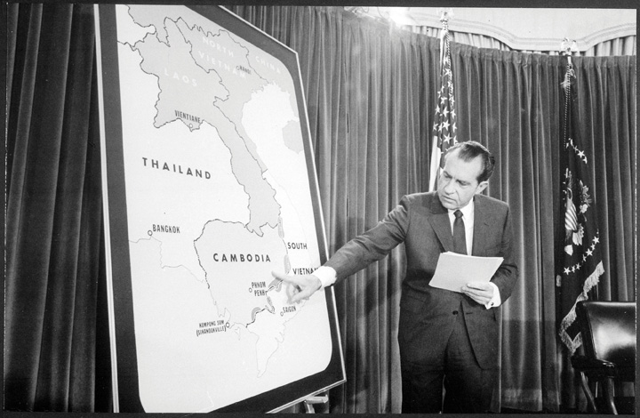
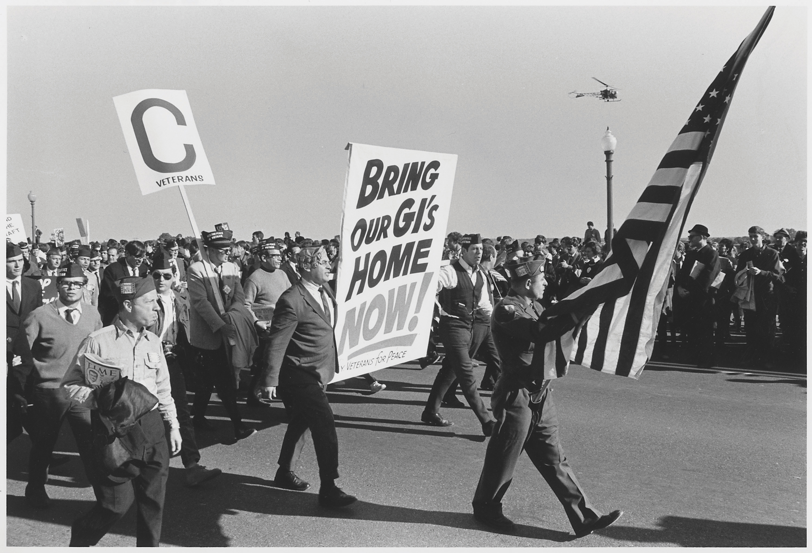
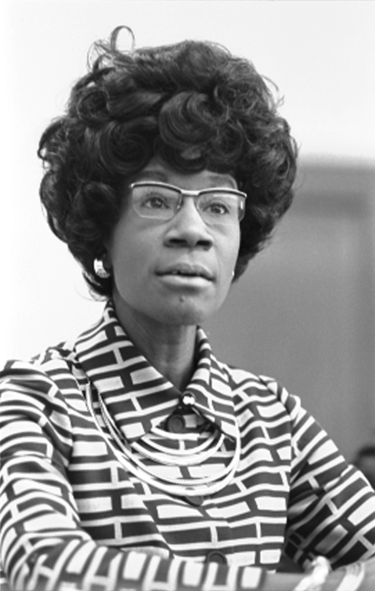
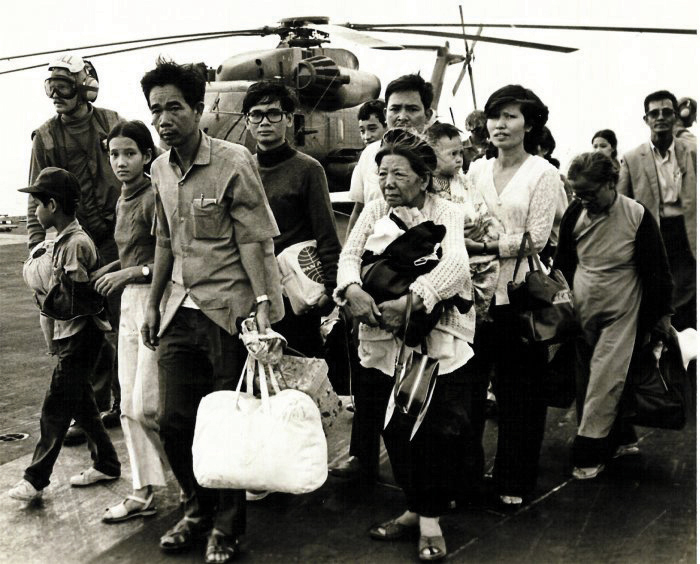
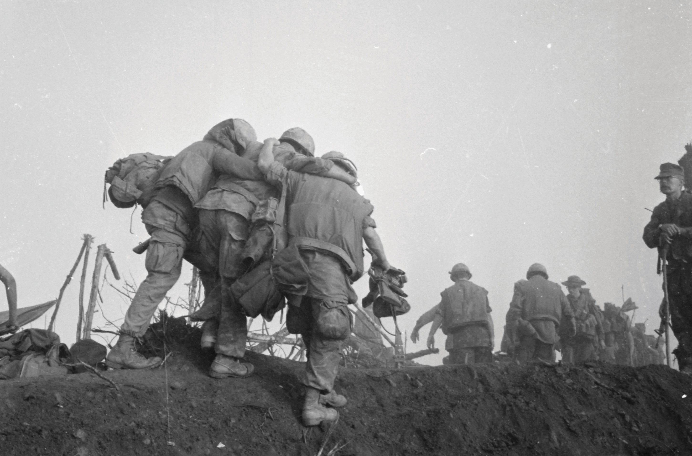
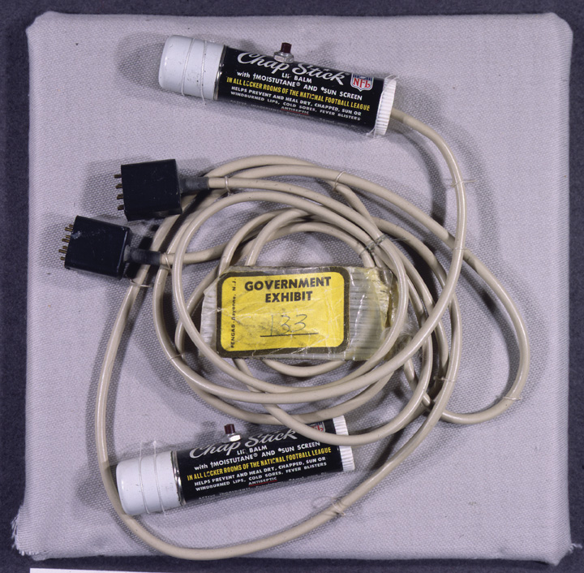

Figure 12.1
President Nixon points to Cambodia on a map during a press conference in April 1970. Although US forces had been conducting operations in Cambodia prior to this time, the announcement led to renewed protests by antiwar activists.
Almost immediately upon assuming office in early 1969, President Richard Nixon ordered the bombing of the independent and neutral nation of Cambodia. The president hoped to eliminate the supply network that linked North Vietnamese Army (NVA) with Vietcong (VC) fighters in the South. Although destroying these supply networks was a military necessity if the United States hoped to neutralize the VC, bombing a neutral nation violated a host of legal and ethical standards. As a result, the American people were not informed when military operations expanded beyond the Vietnamese border. The people of Cambodia and neighboring Laos had a different perspective, as 70,000 tons of bombs were dropped on their nations during the late 1960s.
In April 1970, Nixon announced that US ground troops would conduct small-scale missions in Cambodia. Antiwar protests increased in the wake of this announcement, and many Americans became concerned that the war might be expanding instead of moving toward the honorable peace Nixon had promised. In reality, Nixon was merely acknowledging what had already been occurring. The delayed protest demonstrates the almost willful complicity of the American media to pass on official military press releases and ignore reports from Laos and Cambodia. International media sources had reported on the bombing of Laos and Cambodia long before Nixon’s public announcement, yet only the New York Times and a handful of other newspapers in the United States reported the story. Most Americans wanted to know as little as possible about the Vietnam War—especially if it appeared that defeating the VC and North Vietnam required American troops to fight beyond the borders of Vietnam.
College students proved an exception to this rule as Nixon’s announcement was met with a wave of moral indignation. Hundreds of thousands of students participated in protests from Seattle Central Community College to the newly founded Florida International University in Miami. On May 4, 1970, a protest at Kent State University turned violent when Ohio National Guardsmen fired into a crowd and killed four students. The event polarized the nation, with those who still supported the war siding with the soldiers who had previously been attacked by rock-throwing students. Some of these students had even set fire to the Reserve Officer’s Training Corps (ROTC) building and then attacked firefighters sent to stop the blaze.
By one perspective, the Kent State tragedy was a “riot” that typified the lack of respect for authority and the rule of law. Those who opposed the war referred to the incident as a “massacre,” emphasizing that most of the students were peacefully exercising their constitutional rights of assembly and speech. Ten days later, Mississippi state police shot and killed two students and wounded a dozen others at Jackson State University, a historically black college. Area whites generally believed that the police used a judicious amount of force against the unarmed protesters, while African Americans considered the event to be another massacre. Like the students at Kent State, many had set small fires and were throwing rocks at the police. However, unlike the Kent State Riot/MassacreThe tragic death of four students on May 4, 1970, after an anti-Vietnam protest escalated into violence on May 4, 1970. Those who opposed the Vietnam War used the phrase “massacre” to describe the event and emphasized that the students were unarmed and exercising their right of free speech. Those who supported the war described the event as a “riot,” focusing on the arson and physical violence some of the students had used against the Ohio National Guard., which polarized the nation, the killings at Jackson State barely made headlines and are seldom included in the historical record.
Historical accounts of the home front also tend to underestimate the diversity of the antiwar movement that quickly expanded beyond activists and scholars like Noam Chomsky to embrace union leaders, Mexican American activists, white factory workers, conservative clergy, and veterans from both wealthy and humble origins Antiwar sentiment was strong in working-class neighborhoods as demonstrated by polls and antiwar protests. This was especially true in minority neighborhoods that provided a disproportionate share of the war’s casualties. Martin Luther King Jr. was one of the earliest national figures to publicly condemn the war. He was joined by other African Americans such as Muhammad AliAn outspoken heavyweight boxing champion who became a member of the Nation of Islam, Muhammad Ali was stripped of his title in the aftermath of his refusal to be inducted into the US Army after he was drafted. Perhaps the most famous athlete of his time, Ali based his refusal on his religious and political beliefs. After the military made it clear he would not see combat, Ali’s willingness to end his career and go to jail rather than accept an assignment traveling and entertaining troops challenged the image of cowardice that was associated with draft evaders. who was drafted but rejected the army’s offer to accept a cozy assignment entertaining troops. Refusing induction, the still-undefeated Ali was stripped of his title and was nearly sentenced to a long prison term.
Those who supported the war likewise represented a diverse cross-section of the United States. In fact, even the most liberal universities, such as Berkeley, were host to both antiwar protests and counterprotests by those who supported the war. Antiwar protesters who occupied campus buildings were usually surrounded by even more students who demanded that the protesters abandon their disruptive campaign so that classes could resume. This was especially true among anxious seniors who feared that the protests would disrupt their plans for graduation. Others publicized the atrocities committed by the North Vietnamese and Vietcong. For every Mai Lai Massacre, they argued, there was an instance of equal or greater inhumanity. After taking control of the city of Hue following the Tet Offensive, for example, Vietcong forces tortured and executed thousands of residents whom they believed had aided the United States.
In June 1971, former US Marine Daniel Ellsberg decided to leak a confidential study that detailed the history of escalation in Vietnam. Dubbed the Pentagon PapersA classified report on the US military’s actions in Vietnam between 1945 and 1967 that was created by the Department of Defense and leaked to the press by researcher Daniel Ellsberg. This report demonstrated that the military and Johnson administration had sought to mislead the American people regarding the success of their actions in Vietnam. by the media, the report contained 7,000 pages that revealed the long history of government misinformation dating back to the Kennedy administration. The New York Times and the Washington Post agreed to publish selections of the leaked documents until the Nixon administration temporarily blocked further publication of the leaked documents. The Supreme Court reviewed the Pentagon Papers and decided that the reports contained nothing that endangered national security, a decision that led to additional releases of the information they contained.
The American public was shocked at the candor of Ellsberg’s leaked documents. Each day the Times published a new letter from a different commander or military strategist plainly stating that the Vietnam War was unwinnable. The reports clearly indicated that the local population had no confidence in the South Vietnamese government and that no amount of napalm could convince them that this regime was fighting for their liberation. At best, these commanders believed that sending more troops and dropping more bombs might convince the enemy to negotiate a settlement that would preserve the image of American military power. The public was outraged to find how military and civilian leaders had deliberately falsified information to make it appear as though US forces were winning the war. Pentagon officials falsified the numbers of enemy killed, deleted all mention of civilian casualties, and buried information about the breakdown of military discipline among US troops.
Figure 12.2
As the war continued, an increasing number of Vietnam veterans returned home and contrasted their experiences with the Pentagon’s official reports of victories against Communist forces. Protests by veterans, such as this 1967 march, became more common in the final years of the war.
Pundits began using the phrase “credibility gapA phrase that came into common usage in the wake of scandals such as the release of the Pentagon Papers. The gap was the distance between what federal government officials knew to be true and the official statements of those officials.”—a term referring to the difference between what government officials reported about Vietnam and what the Pentagon Papers and other sources revealed the government actually knew to be the truth. The Pentagon Papers combined with previous revelations and the antiwar movement to convince most Americans that their president must direct his efforts to ending the war as quickly as possible. “Peace with honor” now meant withdrawal to a majority of Americans. Nixon responded by ending the draft and reducing the numbers of troops in Vietnam. The troop reductions and end of the draft greatly reduced antiwar activities, which led many to question whether peace activists were more concerned with preventing people like themselves from being sent to war rather than ending the war itself. Young men in need of employment continued to join the military and serve in Vietnam, while the rest of the nation pretended as if the war had ended along with the draft. Others pressed on, hoping to convince the nation that withdrawal from Vietnam was more honorable than maintaining the status quo to avoid the disgrace of surrender.
The Pentagon Papers covered only the years prior to Nixon’s election, yet the president became convinced that these documents were released by individuals who were bent on destroying his administration. As a result, Nixon began investigating members of his own staff rather than addressing the important questions that the Pentagon Papers raised about the US presence in Vietnam. Nixon directed his staff to use campaign funds to hire former CIA agents to spy on dozens of the government’s own employees. The administration dubbed these men “plumbers” in relation to their mission to investigate and prevent leaks of information that might harm the White House. Before long, these plumbing jobs expanded to a variety of illegal operations meant to spy on and discredit a long list of people the president considered to be his political enemies. One year almost to the day after the Pentagon Papers were leaked, a group of Nixon’s plumbers was caught inside the Democratic offices of the Watergate hotel.
The North Vietnamese launched another major offensive in the spring of 1972, but Nixon still hoped that he could force the North to accept a cease-fire under his terms. Although Nixon was one of the most knowledgeable US presidents when it came to foreign affairs, he was also one of the least likely to respect the limits of his own authority. While promising the American people that he was working toward peace, Nixon had secretly escalated the war. Nixon approved numerous bombing campaigns and ordered the navy to place mines in every major port of North Vietnam. At the same time, Nixon recognized that these efforts were unlikely to persuade the North to surrender. Nixon simply hoped these actions would help convince the North Vietnamese that US bombing campaigns might never cease, which might lead them to accept US demands regarding American withdrawal. The intense bombing likely had the opposite effect as negotiations stalled throughout 1972. The most contentious issue was the US demand that the North Vietnamese remove all forces from South Vietnam prior to US withdrawal—something that the North viewed as a potential trap.
As election of 1972 neared, over 60 percent of Americans called for an immediate end to the war. An estimated 50,000 to 100,000 draftees had refused to report for induction, many having fled to Canada. Over two hundred army officers had been killed by their own troops, and even veteran soldiers were refusing to follow orders in Vietnam. South Dakota senator George McGovernA historian who wrote about the labor strikes of the Colorado coalfields, George McGovern became a Progressive Democrat who represented his home state of South Dakota for over two decades. McGovern was defeated by Nixon in the presidential election of 1972, largely because he was viewed as too liberal while Nixon was viewed by many voters as a moderate. had called for an immediate end of the war in his failed attempt to win the Democratic nomination for president in 1968. His early opposition to the war gave him credibility among the left as he renewed his campaign for the 1972 nomination. His early opposition to the war was also his biggest political liability. To win the general election, the South Dakota senator needed to gain the support of Americans who opposed Nixon but also viewed the antiwar movement with suspicion.
McGovern was challenged by a number of leading Democrats, but the most intriguing aspect of the 1972 Democratic primary was the candidacy of Shirley ChisholmAn educator and community leader who entered New York politics and became the first African American woman elected to Congress in 1968. Four years later, she also became the first viable African American presidential candidate, winning several states in the 1972 Democratic primary.. An African American congresswoman from New York, Chisholm won several states of the Deep South that only four years prior had been carried by an archsegregationist. Chisholm never came close to challenging McGovern for the nomination, however, as the liberal South Dakotan also received the support of a diverse group of voters who desired change and an immediate end to the war. However, McGovern’s campaign promise to pardon draft evaders alienated many Americans. Recognizing that McGovern’s base of support was tied to Vietnam, Nixon maneuvered once again to promise peace while secretly escalating the war. Nixon withdrew his demand of North Vietnamese withdrawal from South Vietnam along with other provisions he knew would convince the North to agree to peace talks. These negotiations were held in private, allowing Nixon to declare that he had prevailed in forcing the North Vietnamese to accept US terms and delivered on the promise to bring “peace with honor.”
Figure 12.3
New York congresswoman Shirley Chisholm became the first black candidate to win a state primary in 1972. Chisholm won the Democratic primaries of New Jersey, Louisiana, and Mississippi, partly because many white Southerners had joined the Republican Party by this time. Her victory demonstrates the impact of the 1965 Voting Rights Act as these Southern states had excluded black voters and supported segregationist candidates in recent presidential elections.
Nixon’s announcement that peace talks were under way deprived McGovern of his leading issue and led to a second Nixon victory. Achieving peace in Vietnam would prove more difficult, and for Nixon, much less honorable. The latest in a long line of military leaders of South Vietnam pointed out what everyone already knew—North Vietnam would resume the offensive once US forces withdrew. The only hope of prevailing against the North absent of US ground forces, argued South Vietnamese leaders, was if US forces continued their bombing campaigns, provided increased military aid, and forced the North Vietnamese to withdraw from the areas of South Vietnam they presently controlled. Nixon understood that achieving all of these objectives was not likely given the political situation in his own country and the military situation in Vietnam. As a result, many view this first round of peace talks as an attempt to secure Nixon’s reelection and begin placing a positive spin on the abandonment of an ally the United States had created.
Ho Chi Minh had died in 1969, but his successors shared their former boss’s appreciation of the importance of American public opinion. As a result, they recognized that Nixon was under tremendous pressure at home to end the war. If they could simply survive the latest bombing campaign, they believed, Nixon would recognize that accepting North Vietnam’s terms for withdrawal was his only politically acceptable option. Once the election was over, however, Nixon brought back his original demand that the North abandon its positions in South Vietnam. He even demanded that the North abandon all efforts at reunification. The North refused these provisions once again, and Nixon responded by escalating the bombing of Southeast Asia.
On Nixon’s orders, US warplanes dropped 100,000 bombs in the last two weeks of December alone, pausing only for Christmas. Bombs once again proved poor agents of diplomacy. On January 27, 1973, Nixon returned to the bargaining table, this time accepting a cease-fire that permitted North Vietnam to keep the territory in South Vietnam it had already captured. Thousands of US troops and tens of thousands of Vietnamese died in the three months that Nixon had attempted to negotiate a more favorable end to the war. In the end, even Nixon understood that none of his demands were likely to prevent the North from resuming its offensive against South Vietnam as soon as US troops withdrew.
By April 1973, nearly all US forces had fled South Vietnam and the North launched a major offensive. South Vietnamese leaders made desperate appeals for assistance, but Congress and the American public made it clear that they would not accept any plan to redeploy troops to Southeast Asia. Nixon and his successor Gerald Ford sent military aid to South Vietnam and pleaded for Congress to reconsider. On April 30, 1975, the South Vietnam capital of Saigon was captured by North Vietnamese troops. American embassy staff in Saigon and the thousands of military and support staff that had remained in South Vietnam were airlifted to safety just as the troops entered the city.
Figure 12.4
The US military evacuated South Vietnamese officials and their families as Saigon was surrounded by Communist forces. Many of these civilians later migrated to the United States.
A war remembered for brutality ended with a demonstration of valor as US military and civilian officials risked their lives to rescue thousands of South Vietnamese officials during the airlift. Because of their support for US efforts, these individuals would have likely been imprisoned or even executed had they been captured by the North. Most were not fortunate enough to escape, and hundreds of thousands of South Vietnamese soldiers and officials were imprisoned. An estimated 1 million Vietnamese fled into neighboring Laos or Cambodia. Others commandeered any craft they could find regardless of seaworthiness and prayed they would be rescued by the US Navy. Tens of thousands of these civilians would eventually find asylum in the United States while the rest became refugees in a region that continued to be plagued by civil war.
Many US veterans also felt like refugees when they returned to a nation that was less than grateful for the sacrifices they had made or compassionate regarding the difficulty of adjusting to civilian life. Some 58,000 Americans lost their lives in Vietnam, while 365,000 suffered significant injuries. Not counted among this number were those who suffered from post-traumatic stress disorder (PTSD)An anxiety “disorder” that results after one experiences severe psychological trauma. Post-traumatic stress disorder was common among many American GIs during the Vietnam War, although few were diagnosed or treated by the Veterans Administration in a timely manner. Some believe that the use of the word disorder is inappropriate. These individuals argue that the psychological trauma experienced by many veterans is a normal reaction to psychological trauma.. The experience of Vietnam veterans, like those of all wars, varied greatly. Infantrymen deployed to forward locations were surrounded by death, and some turned to alcohol and illicit drugs. For some troops stationed in bases throughout the region, the greatest battle was against tedium. When these men returned to the States, many felt that they were ostracized and reverted to their old addictions. Most others simply tried to rebuild their lives, demonstrating a resiliency that was as inspiring as their many selfless actions in combat.
Refugees in Southeast Asia likewise suffered from the lingering scars of war, as well as new ones caused by land mines that remained buried throughout the region and that killed thousands of civilians each year. The war also resulted in the destabilization of neighboring countries. Cambodia descended into civil war. The Communist Khmer RougeFollowers of the Communist Party of Cambodia who seized power following a civil war that coincided with the war in neighboring Vietnam. Led by the brutal dictator Pol Pot, the Khmer Rouge executed between 1 and 2 million people in their effort to purge Cambodia of skilled workers, the educated, and any other person they deemed subversive to their vision of a totally agrarian society. under dictator Pol Pot eventually seized power and executed an estimated 2 million Cambodians in the late 1970s. Thanks to the efforts of civil rights veteran Bayard Rustin and countless other activists who publicized the conditions Cambodians faced, tens of thousands of Cambodian and Vietnamese refugees were granted sanctuary in the United States.
Americans differed in their interpretations regarding the outcome of the war. For some, like General William Childs Westmoreland, the war had been lost on the home front where protesters had sapped the will of civilian leaders. For others, the war was based on false assumptions, and protests were needed to call attention to the incongruities and inhumanity that surrounded its execution. Controversy regarding the Vietnam War carries into the classroom where students are more likely to learn about massacres than battles. In sharp contrast to the campaign maps that are presented for previous wars, there is rarely any discussion of tactics and strategy or even a single battle beyond the Tet Offensive. The historic view of the home front during Vietnam is also unique. Students learn about protesters rather than factory production, leaked internal documents take the place of encryption machines, and the returning GI appears as a shadowy figure implicitly juxtaposed against the “Greatest Generation” that saved the world from Hitler.
Recollections of Vietnam veterans reveal both the rationale and the shortcomings of this unique historical memory regarding the military history of the war. Oral histories reveal alienation and despair, the inhuman nature of guerilla warfare, and numerous atrocities committed in the name of survival. They also reveal the valor of American GIs who resolved to never leave a fellow soldier behind against a hidden enemy. Interviews with NVA and VC troops indicate a sort of bewildered respect for the dedication of American GIs toward their brothers in arms, questioning the logic of sending entire platoons to rescue a wounded soldier. Opposing forces were especially mystified that US soldiers would even risk their lives to retrieve the body of their fallen comrades. From the perspective of the GI, however, defending the life and memory of a trusted friend may have been the only part of their service that truly made sense to them. However, American veterans returned to a public that was disinterested in their experiences. After four decades, few historians have sought to collect and preserve these perspectives.
Figure 12.5
American soldiers refuse to leave wounded and deceased comrades on the battlefield, a practice that has led to both respect and bewilderment among adversaries. Although risking one’s life to bring home the remains of another comrade makes little sense to many outsiders, it is one of the defining characteristics of a US soldier.
The historical memory of Vietnam is also unique when it comes to the legacy and lessons of the war. Some Americans believe that the lesson of Vietnam is the danger of granting military leaders too much power and the reluctance of civilian officials to respond to popular pressure to end the war. For others, the message for future generations is the danger of permitting politics and politicians from withholding the full range of resources and options from commanders in the field. By this perspective, the overwhelming advantages of the United States in terms of resources and technology made US victory inevitable had it not been for limits placed on military commanders. These individuals believe the United States could have surrounded and eliminated all who opposed their will if only permitted to wage total war as they had in World War II. From the perspective of many Vietnamese, however, the use of napalm and bombing campaigns that dropped a total of five hundred pounds of explosives per resident of Vietnam more closely defined “total war” than any conflict in world history.
Many in Congress at least tacitly agreed with the antiwar perspective and approved the War Powers ActA law designed to limit the ability of the president to commit US troops without the authorization of Congress in the wake of the Vietnam War. The law permits the president to send troops without congressional approval in cases of national emergency. However, she or he must notify Congress within forty-eight hours of this action and withdraw US forces within certain time limits without congressional authorization or a declaration of war. over Nixon’s veto in November 1973. The new law required the president to notify Congress of any troop deployment within forty-eight hours. It also prohibited the president from using troops in an overseas conflict beyond sixty days without a congressional declaration of war. Those who had protested the Vietnam War celebrated the decision as a vindication of the Constitution and proof of the eventual triumph of democracy. Others argued that the new law permitted the fall of Saigon and doomed many Vietnamese who had supported the United States. Still others feared that the reluctance of the United States to intervene militarily might embolden America’s enemies. By this perspective, the War Powers Act aided Communist forces in neighboring Cambodia and discouraged those who were fighting against a left-leaning faction in Angola during subsequent years. For advocates of containment, the legacy of Vietnam was one of second-guessing military commanders and an emasculation of America’s commitment to supporting anti-Communist forces around the globe. For others, Vietnam was a reckless intervention that escalated local conflicts and paved the way for the kind of totalitarian regimes that developed in places like Angola and Cambodia.
Nixon had long believed that his political enemies were conspiring against him ever since losing back-to-back elections, first for the presidency in 1960 and then for the governorship of California in 1962. As president, the release of the Pentagon Papers convinced Nixon that enemies inside his own administration were working against him. In response, he hired former CIA and FBI agents to spy on dozens of his own officials in search of “disloyal” employees who might be leaking negative information to the media. Dubbed the “White House Plumbers,” these covert operatives illegally tapped phones and eventually expanded their operations to include breaking into the offices of political rivals.
On June 17, 1972, five of the plumbers were caught inside the offices of the Democratic National Committee (DNC) headquarters in the Watergate complex in Washington, DC. The Watergate break-inA burglary of the Democratic headquarters committed by the supporters of Republican President Richard Nixon in June 1972. Nixon was forced to resign the presidency due to his efforts to cover up the crime. had been authorized by the Committee to Reelect the President (often referred to by the inaccurate but perhaps fitting acronym CREEP). The break-in was conducted with the knowledge of Nixon’s attorney general John Mitchell, chief of staff H. R. Haldeman, and chief domestic advisor John Ehrlichman. Most importantly, it had been approved by Nixon himself. Watergate was one of dozens of illegal operations designed to neutralize Nixon’s potential opponents. In fact, the June 17 break-in was not the first time Nixon’s supporters had targeted the DNC headquarters, and this particular operation was needed to fix the phone taps that were improperly placed in a previous break-in.
Figure 12.6
Among the evidence used against the White House Plumbers were hidden microphones placed inside ChapStick containers.
Given Nixon’s overwhelming victory over Democratic candidate George McGovern, who won only 17 votes in the Electoral College to Nixon’s 520, few suspected that Nixon or any of his top advisers would have ordered the break-in. Given the amateurish methods of the burglars, most Americans assumed Watergate was the effort of some politically motivated fringe group. Secretly, however, Nixon and his top assistants had moved into damage control mode and diverted tens of thousands of dollars in campaign funds to be used as bribes to convince the five arrested men from revealing their connections to the Committee to Reelect the President. These efforts might have succeeded as the prosecutors and press displayed little interest in the initial trial of the five burglars in January 1973. The most piercing questions actually came from the judge. In response, one of the burglars revealed some of what he knew about the conspiracy. This individual was James McCord, a former CIA operative who resented the way the Nixon administration had tried to blame the CIA for a number of unrelated mistakes. Ironically, Nixon would later try to use the CIA to derail the investigation.
Figure 12.7

Nixon’s letter of resignation included no statement of guilt or innocence regarding his affiliation with the Watergate Break-In. Nixon was pardoned by President Ford and continued to maintain that he had only acted in the best interests of the nation.
By the spring of 1973, Washington Post reporters Bob Woodward and Carl Bernstein were chronicling numerous connections between the Watergate break-in and Nixon’s most trusted advisers. As they closed in on the truth, Nixon hoped to find someone in his coterie, preferably someone at the lowest level, to admit that he or she had ordered the break-in without consulting the president. There was little honor among thieves and even less among the Watergate burglars. By this point, these men had already been given a combined $75,000 from Nixon’s campaign fund to keep quiet. Nixon found that none of his top advisers were willing to fall on their swords to protect him at any price. Many of these men had been conducting illegal or quasi-legal operations for several years, each believing they had enough evidence of the other’s dirty tricks that none of the president’s men would dare testify against the others. However, due to relentless investigating and the testimony of a few officials outside Nixon’s coterie, enough information became known to force the resignation of many of Nixon’s top officials by April 1973.
These resignations and the acting FBI director’s admission that he had destroyed evidence related to the Watergate break-in led to a high-profile senate investigation in the summer of 1973. One individual testified that the president had known about the break-in and ordered a cover-up. Still others presented the break-in as an operation conducted by people who supported Nixon but were operating without the president’s knowledge. It looked to most Americans that Nixon had some connection to the Watergate break-in, but there was still no firm evidence either way until it was discovered that the president had installed a taping system that recorded every conversation in the Oval Office.
Nixon had installed the system believing that only he would have access to the secretly recorded conversations, a resource that could be used to blackmail potential rivals as well as record the events of his administration for his memoirs. Ironically, public knowledge of the tapes proved Nixon’s undoing. Nixon tried to stay ahead of events by voluntarily turning over a few tapes that he believed would prove his innocence. However, these tapes had obviously been tampered with. As a result, this led to increased demands that all of the tapes be turned over. Nixon refused, however, citing executive privilege because of the many sensitive conversations that occurred in the White House on various matters unconnected to the Watergate investigation. Nixon also ordered his attorney general to fire the special investigator who had requested the tapes. Instead, both the attorney general and the assistant attorney general resigned in protest.
If Nixon was not guilty of collusion or a cover-up, the American public asked, why was he working so hard to derail the investigation? Nixon’s public approval fell to 24 percent—the lowest of any president in US history. As Nixon continued to insist that he was “not a crook,” the nation endured an agonizing year of trials and procedural investigations. The investigations culminated with the US Supreme Court case United States v. Richard M. Nixon, after which Nixon was ordered to release the White House tapes. Anything dealing with matters of national security remained classified, but the president’s conversations regarding Watergate were released. These tapes indicated that Nixon had conspired to use the CIA to cover up the Watergate break-in. These illegal actions were the reason Nixon was impeached and would have been removed from office had he not voluntarily resigned on August 8, 1974. However, the tapes were most shocking in their revelation of secret operations in Cambodia and dozens of illegal spying operations beyond Watergate.
Nixon’s resignation would have elevated Vice President Spiro Agnew to the presidency had he not previously been forced to resign after an unrelated investigation revealed the former Maryland governor had accepted bribes from a government contractor. Agnew resigned in October 1973—just as the Watergate investigation was heating up. Nixon appointed Michigan congressman Gerald FordThe thirty-eighth president of the United States, Gerald Ford had been a long-serving member of Congress representing Grand Rapids, Michigan. Ford was appointed by Nixon to replace Vice President Spiro Agnew after he was forced to resign following a finance scandal. Nixon soon resigned as well due to his role in Watergate, which elevated Ford to the presidency. to replace Agnew. As a result, it was the unelected Gerald Ford who became president when Nixon resigned.
As president, Ford disarmed many critics through candor and humility. Ford was the first to point out that he had been appointed rather than elected and promised to lead by consulting others. He also joked that he was a “Ford not a Lincoln,” a humble remark and a reference to the reliable and no-frills line of automobiles he implicitly contrasted against the luxury models offered by the same company. He could have called himself a Mercedes, as most Americans were simply relieved that the long national nightmare of Vietnam and Watergate was over. Ford’s approval rating stood over 70 percent when he took office. However, the new president may have confused the public’s desire to move forward with a willingness to forget all about Watergate. Ford’s approval rating dropped 20 percentage points the day he announced a full pardon of ex-President Nixon for any crimes he committed—including ones that might be found in the future. Many Americans believed that Ford was now part of the Watergate cover-up, speculating that he had been appointed in exchange for a promise to pardon Nixon if he was forced to resign.
The Watergate investigation revealed that the CIA had participated in many of Nixon’s surveillance operations and had conducted wiretaps and other illegal investigations of antiwar organizations inside the United States. The agency came under fire as the CIA was prohibited from conducting domestic operations. The result was a series of investigations that revealed a litany of CIA assassination plots, secret payments, and even an effort to destabilize Cuba by poisoning livestock in hopes of fomenting revolt against Castro.
It also became clear that the CIA had supported a military coup that led to the death of Chile’s elected leader Salvador Allende in September 1973. Allende was a Marxist who the CIA had tried to prevent from being elected in 1970. Once in office, the CIA worked to disrupt Allende’s government and recruited Chilean officials who might be interested in using the military to seize power. The US government’s exact role in supporting the coup has never been precisely determined, but the Nixon administration welcomed the emergence of coup leader Augusto PinochetDictator who ruled Chile after leading a coup against the democratically elected Socialist leader of Chile in 1973. Fearing the spread of Socialism in South America, the United States offered tentative support for Augusto Pinochet’s regime despite his brutal repression of dissenters. as a victory against Communism. Pinochet tortured and executed thousands of Allende’s supporters and replaced a left-leaning but democratically elected government with one of the most repressive military dictatorships in Latin America. Once this information became public, Congress decided to curtail the CIA’s power to operate with impunity and passed laws demanding closer scrutiny of future operations.